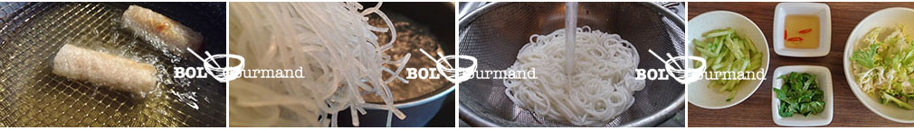

Le bun nem est un plat frais, idéal pour les beaux jours. Une fois les nems réalisés, le plat est simple à préparer. Le bun nem est une autre façon de déguster les nems que la manière classique. Il est servi dans un bol, accompagnée de vermicelles de riz, d’aromates, de légumes et même de viandes. En y ajoutant un sauté de boeuf à l’oignon, il devient le célèbre Bo Bun, un plat que l’on retrouve très souvent dans les restaurants vietnamiens.
Trouvez les produits asiatiques ainsi que la recette pour realiser le bun nem dans le kit de cuisine vietnamienne "kit Nem & co" sur boxbolgourmand.com.
La livraison est offerte* en Point relais !
Quantité : 3-4 pers
Préparation : 15 min
Cuisson : ~20 min
Ustensiles
1 friteuse ou sauteuse et huile de friture
1 plat + papier absorbant
1 casserole + ~2 l d'eau
1 paire de ciseau
1 passoire
4 grands bol ou assiettes creuses (pour servir)
Ingrédients
8-12 nems (cf la recette nem)
200 g de vermicelles de riz
1/2 concombre
8 feuilles de salade
de la menthe
Accompagnement
100 ml de sauce nem (cf la recette sauce nem)
1/2 carotte coupée en julienne*
50 g de cacahuètes concassées*
*facultatif
Préparations
Préparation des ingrédients !

- Faire chauffer l’ huile dans une friteuse et préparer un plat recouvert de papier absorbant. Cela permet d’éliminer le surplus d’huile.
- Une fois l’huile chaude, faire frire les nems jusqu’à ce qu’ils dorent (10-15 min), les égoutter et les déposer sur le papier absorbant.
- Faire bouillir de l'eau dans une casserole et y mettre les vermicelles de riz. Laisser cuire 7 min, en les remuant de temps en temps pour éviter qu’elles n’accrochent le fond.
- Egoutter les pâtes, les rincer à l'eau froide puis les ré-égoutter. Cela permet de retirer l ’excédent d’amidon et de couper la cuisson des vermicelles
- Laver la salade et les feuilles de menthe, puis les couper grossièrement.
- Éplucher le concombre et le couper en fins bâtonnets.
- Réserver les ingrédients séparément.
- Pour la préparation de la sauce, se référer à la recette de la sauce nem.
Composition du bol de bun nem !
- Dans un grand bol, disposer la salade, les vermicelles de riz, les bâtonnets de concombre, les nems coupés en morceau, puis la menthe, et enfin arroser de sauce nem.
C'est prêt ! Mélanger et déguster !*
Comment déguster le Bun nem ?
Y verser la sauce nem, et tout ce que l’on souhaite comme des carottes en julienne et/ou des cacahuètes grillées concassées. Et le meilleur moment : mélanger le tout et déguster. On peut y ajouter des brochettes de viande grillés, du boeuf à l’oignons ou encore des crevettes au saté.